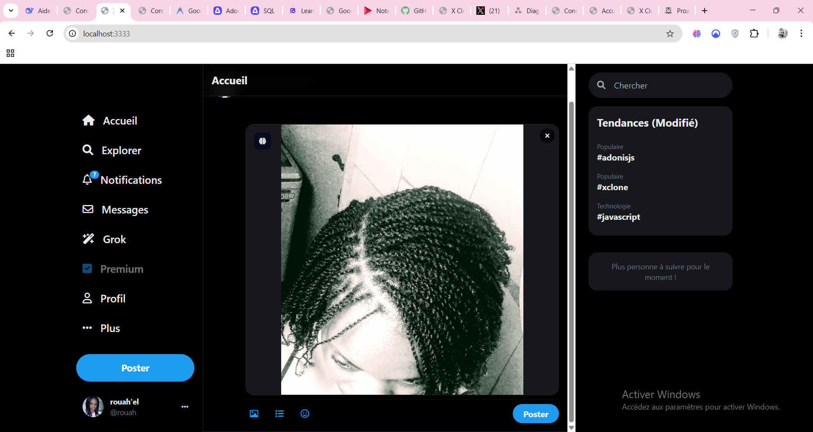
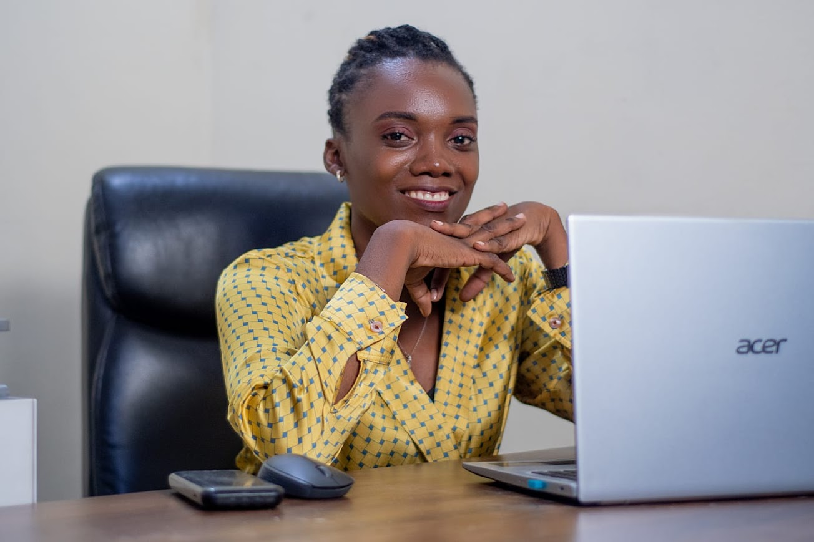
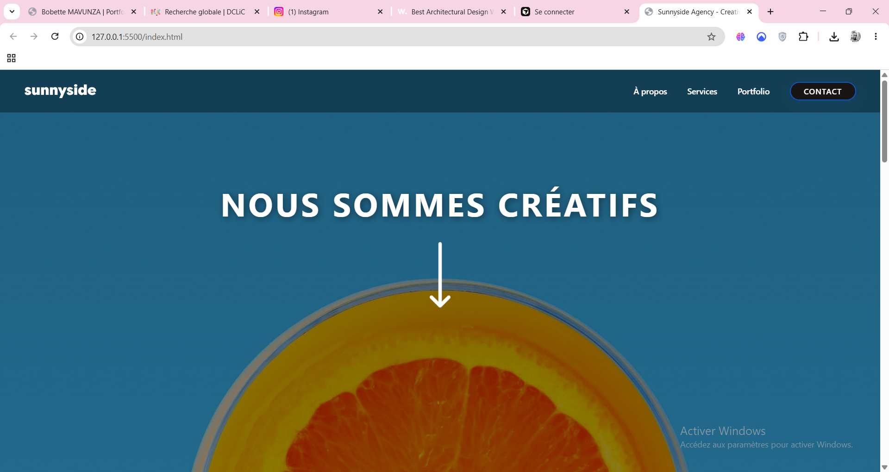
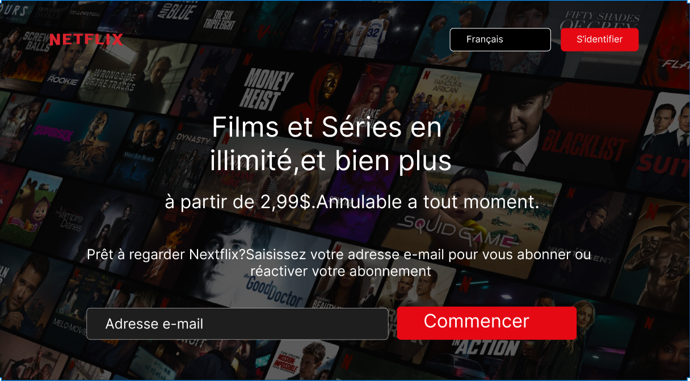
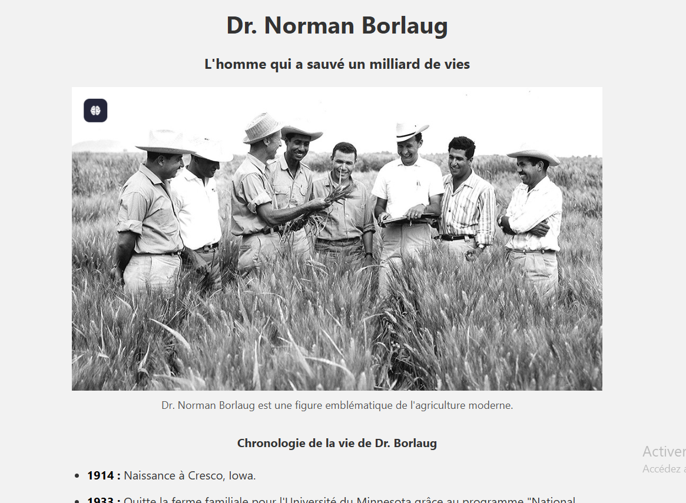

Projet reelFull stack
Projet X clone Adonis
Clone inspire de X avec interface sombre, navigation, tendances, publication, authentification, timeline, likes et base PostgreSQL.
Developpeuse Web Junior
Diplomee en developpement web et mobile, je combine web design, front-end, back-end et bases de donnees pour contribuer a des projets web performants.
Developpeuse web junior basee a Kinshasa, motivee par l'innovation numerique et les interfaces utiles.

const profil = {
nom: "Bobette MAVUNZA",
role: "Developpeuse Web Junior",
focus: ["UI/UX", "AdonisJS", "PostgreSQL"],
mission() {
return "Creer des projets web utiles et performants.";
}
}A propos
Basee a Kinshasa, je suis diplomee en developpement web et mobile. J'apporte de l'organisation, de l'autonomie et une bonne capacite d'adaptation pour participer efficacement a la realisation de produits web.
Selection

Projet reelFull stack
Clone inspire de X avec interface sombre, navigation, tendances, publication, authentification, timeline, likes et base PostgreSQL.

Landing pageFrontend
Landing page creative avec navigation, hero visuel, sections de services et integration responsive.

Maquette UIWeb design
Interface inspiree de Netflix avec hero visuel, formulaire d'inscription, choix de langue et appel a l'action.

Page hommageFrontend
Page hommage structuree avec image principale, texte descriptif et chronologie de vie.
Stack
Parcours
Formation Bac+2 Simplon a Kinshasa: front-end, back-end, UI/UX, bases de donnees et projets web.
Gestion administrative et financiere, tenue des documents, caisse, classement et suivi logistique.
Formation a l'Institut Superieur de Commerce de Matadi, avec une base solide en organisation et gestion.
Contact
Je suis disponible a Kinshasa, en teletravail ou en presentiel, pour contribuer a des projets web.